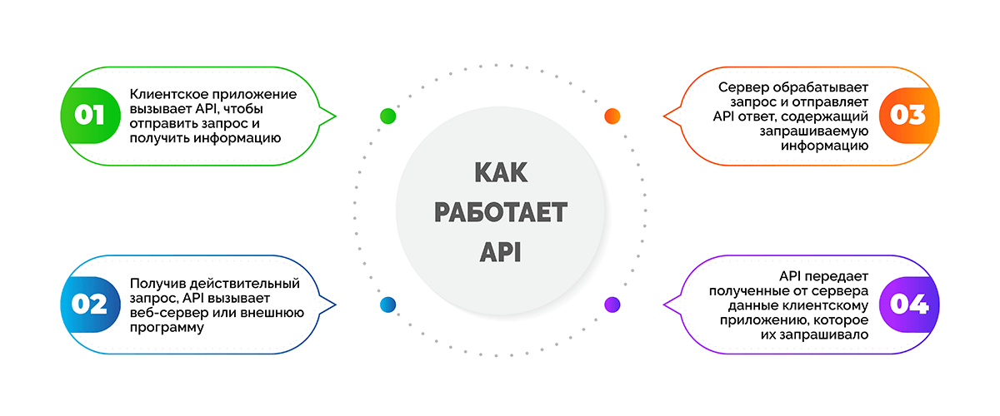
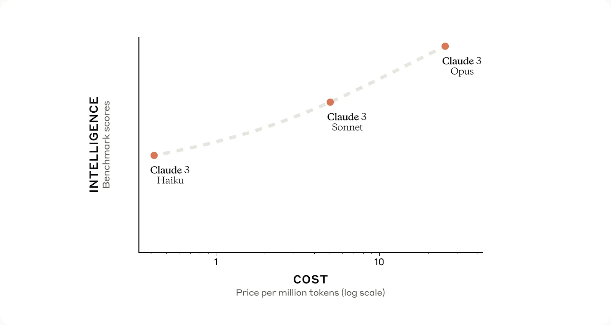
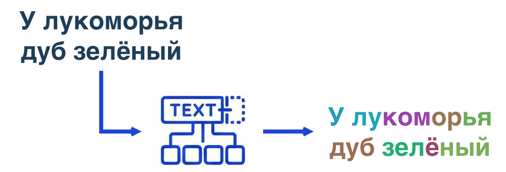
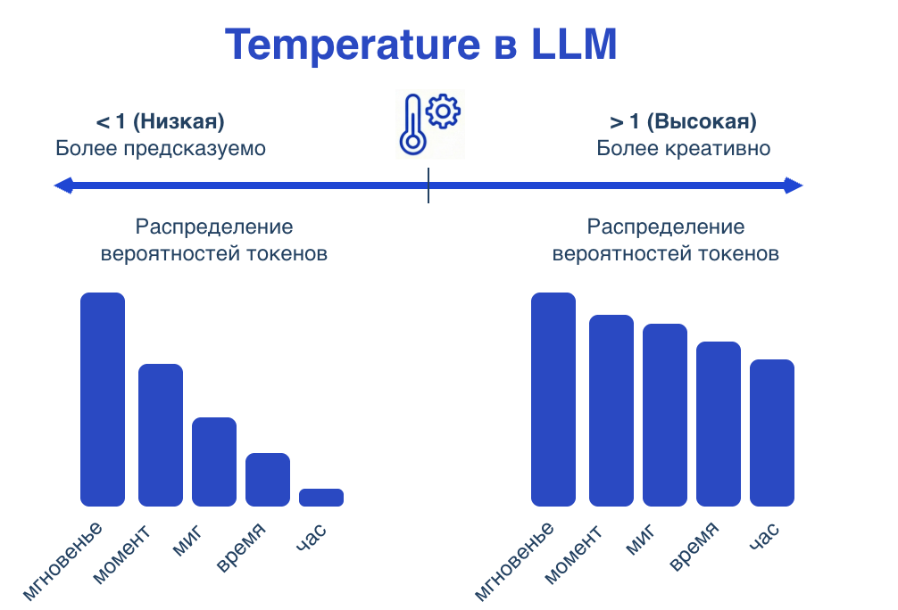
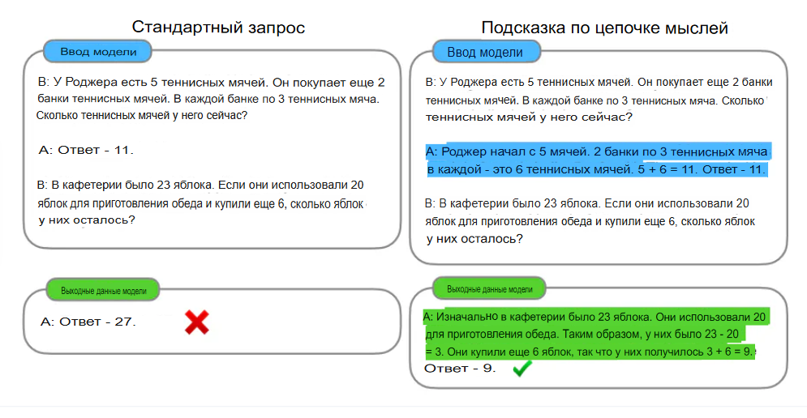

📖 Лекционный курс
6 лекций по Claude API
Лекция 1. Введение в Claude API и подготовка рабочей среды
Понятие API, характеристики моделей Claude 3, настройка виртуального окружения
Цель лекции:
Сформировать понимание назначения программного интерфейса API в контексте больших языковых моделей, ознакомить с процедурой регистрации в Anthropic Console, получением API-ключа и настройкой среды разработки на Python для выполнения первых запросов к Claude API.
Ключевые вопросы:
- Понятие программного интерфейса API и его роль в доступе к LLM.
- Характеристики моделей семейства Claude 3 (Haiku, Sonnet, Opus).
- Настройка виртуального окружения Python и установка необходимых библиотек.
1. Понятие программного интерфейса API
В современной разработке программного обеспечения значительная часть вычислительных ресурсов предоставляется через сетевые интерфейсы. API (Application Programming Interface) представляет собой набор правил, протоколов и инструментов, посредством которых одна программная система взаимодействует с другой. В контексте облачных сервисов API определяет структуру запросов к удалённому серверу, формат передаваемых данных и спецификацию ответов.
API выполняет функцию посредника между клиентским приложением и сервером, на котором выполняются ресурсоёмкие вычисления. Клиентский код формирует запрос в соответствии со спецификацией, отправляет его по сети, а сервер обрабатывает запрос и возвращает результат. Весь процесс является асинхронным и требует соблюдения протокола передачи данных (обычно HTTP/HTTPS).
Claude API — это официальный программный интерфейс компании Anthropic, обеспечивающий доступ к семейству больших языковых моделей Claude. Через данный интерфейс доступны следующие операции: отправка текстовых запросов и получение ответов, управление параметрами генерации (температура, максимальная длина), ведение многооборотных диалогов с сохранением истории сообщений.

2. Характеристики моделей семейства Claude 3
Семейство Claude включает три модели, различающиеся по скорости генерации, качеству ответов, стоимости и областям применения. Выбор конкретной модели определяется требованиями задачи и доступным бюджетом.
Claude Haiku является самой быстрой и доступной моделью семейства. Время генерации ответа составляет от 0.5 до 1 секунды, что делает её пригодной для систем реального времени и интерактивных приложений. Качество ответов оценивается как хорошее — достаточное для большинства учебных и прототипных задач. Рекомендуемые области применения: прототипирование, массовая обработка запросов, учебные проекты, чат-боты с высокими требованиями к скорости ответа.
Claude Sonnet занимает промежуточное положение между скоростью и качеством. Время генерации ответа составляет от 1 до 3 секунд. Качество ответов оценивается как высокое, что позволяет использовать модель для задач, требующих глубокого понимания контекста и точности формулировок. Рекомендуемые области применения: аналитика, суммаризация документов, проверка программного кода, извлечение структурированной информации из текстов.
Claude Opus является наиболее мощной, но самой медленной моделью семейства. Время генерации ответа составляет от 3 до 10 секунд. Качество ответов оценивается как лучшее среди всех доступных моделей, что достигается за счёт большего количества параметров и более сложной архитектуры. Рекомендуемые области применения: научные исследования, сложные логические задачи, многошаговый анализ, задачи, требующие максимальной точности и глубины рассуждений.

3. Настройка среды разработки
Для работы с Claude API требуется язык программирования Python версии 3.9 или выше. Проверка установленной версии выполняется в терминале командой python --version. В случае отсутствия Python или наличия более ранней версии следует загрузить актуальный дистрибутив с официального сайта python.org.
Центральным элементом организации проекта является виртуальное окружение (virtual environment). Виртуальное окружение позволяет изолировать зависимости конкретного проекта от глобальной системы Python, предотвращая конфликты версий библиотек между различными проектами. Для создания виртуального окружения в терминале необходимо перейти в директорию, где будет размещён проект, и выполнить команду python -m venv venv. Параметр venv после ключа -m указывает на название встроенного модуля, а второй venv задаёт имя директории, в которую будет помещено окружение.
Активация виртуального окружения выполняется разными командами в зависимости от операционной системы.
Для Windows используется команда venv\Scripts\activate
Для macOS и Linux — source venv/bin/activate.
Успешная активация подтверждается появлением префикса (venv) в начале строки терминала.
Для взаимодействия с Claude API необходима установка официального Software Development Kit (SDK) от Anthropic. В активированном виртуальном окружении следует выполнить команду pip install anthropic. Данная библиотека предоставляет высокоуровневый интерфейс для формирования запросов и обработки ответов, скрывая детали низкоуровневого HTTP-взаимодействия. Дополнительно устанавливается библиотека python-dotenv командой pip install python-dotenv, которая обеспечивает загрузку переменных окружения из файла .env.
Для начала работы с кодом необходимо создать файл скрипта. В корневой директории проекта следует создать файл с расширением .py, например first_request.py. Этот файл будет содержать программу, отправляющую запрос к Claude API и выводящую полученный ответ. Также в той же директории создаётся файл .env — в нём будет храниться API-ключ в зашифрованном от системы контроля версий виде. Файл .env открывается в любом текстовом редакторе, и в него записывается строка ANTHROPIC_API_KEY=sk-ant-api03-ваш_ключ. Важно: файл .env не должен попадать в системы контроля версий (например, Git), поэтому создаётся файл .gitignore, в который добавляется строка .env. Это предотвращает случайную публикацию секретного ключа в открытом доступе.
При первом открытии файла first_request.py в интегрированной среде разработки (IDE), такой как Visual Studio Code, PyCharm или даже обычный текстовый редактор, перед студентом предстаёт пустой файл, который предстоит наполнить кодом. Структура простейшего скрипта включает следующие обязательные элементы: импорт библиотек (os, dotenv, anthropic), загрузка переменной окружения из файла .env, инициализация клиента, отправка запроса с указанием параметров модели и вывод ответа. Все инструкции внутри скрипта выполняются последовательно, сверху вниз. Каждая инструкция, как правило, располагается на отдельной строке. Символ # используется для добавления комментариев — текст после него игнорируется интерпретатором и служит для пояснения кода.
Выводы по лекции 1
- API (Application Programming Interface) — набор правил, обеспечивающий взаимодействие между программами и удалённый доступ к большим языковым моделям.
- Anthropic Console — центр управления ключами доступа и кредитами. API-ключ следует хранить в файле .env и не публиковать в открытых репозиториях.
- Семейство Claude 3 включает три модели: Haiku (самая быстрая для учебных целей), Sonnet (высокое качество, для аналитики), Opus (максимальное качество, для исследований).
- Виртуальное окружение Python изолирует зависимости проекта. Активация подтверждается префиксом (venv) в терминале.
Лекция 2. Структура запроса: параметры model, max_tokens и messages
Выбор модели, управление длиной ответа, организация диалога
Цель лекции:
Изучить три основных параметра запроса к Claude API — выбор модели (model), управление длиной ответа (max_tokens) и организацию диалога (messages), — а также освоить практические навыки их применения.
Ключевые вопросы:
- Характеристики и критерии выбора моделей Haiku, Sonnet, Opus.
- Понятие токена и его соотношение с объёмом текста на разных языках.
- Различие между контекстным окном (200K) и параметром max_tokens.
- Рекомендуемые значения max_tokens для различных типов задач.
- Структура параметра messages: роли user и assistant.
- Построение многооборотных диалогов с передачей истории сообщений.
1. Параметр model: выбор версии Claude
Параметр model определяет, какая именно версия Claude вызывается. Компания Anthropic предлагает три модели в семействе Claude 3, различающиеся по скорости, качеству ответов и стоимости (Haiku, Sonnet, Opus).
Формат указания модели: "claude-3-haiku-20240307", где haiku — имя модели, а 20240307 — дата версии (7 марта 2024 года). Следует использовать актуальную дату, указанную в документации Anthropic.
Для учебных целей оптимальным выбором является модель Haiku. Она обеспечивает достаточное качество для 90% учебных задач.
2. Параметр max_tokens: бюджет ответа
Параметр max_tokens задаёт максимальное количество токенов, которое модель может сгенерировать в ответе.
Токен — это минимальная единица текста для модели. На русском языке один токен соответствует примерно 0.5-0.6 слова. Например, слово «привет» кодируется одним токеном, слово «достопримечательность» — тремя-четырьмя токенами.

Важное различие. Контекстное окно (200 000 токенов) определяет, сколько токенов можно отправить модели. Параметр max_tokens определяет, сколько токенов модель может вернуть. Это различные, не связанные друг с другом ограничения.
Значение max_tokens может принимать целые числа от 1 до 4096. При установке слишком малого значения ответ будет обрезан на полуслове без какого-либо предупреждения со стороны API.
Рекомендуемые значения:
- Для ответа «да» или «нет» — 10-20 токенов
- Для короткого ответа (одно предложение) — 50-100 токенов
- Для типичного ответа на учебный вопрос — 300-500 токенов
- Для развёрнутого объяснения — 1000-1500 токенов
- Для эссе или анализа — 2000-4000 токенов
3. Параметр messages: структура диалога
Параметр messages является центральным элементом любого запроса к Claude API. Он содержит список сообщений, образующих диалог между пользователем и моделью.
Каждое сообщение представляет собой словарь (объект) с двумя обязательными ключами:
role— отправитель сообщения. Принимает значения"user"(пользователь) или"assistant"(модель)content— текстовое содержимое сообщения
Простейший пример (один запрос без истории):
messages = [
{"role": "user", "content": "Сколько планет в Солнечной системе?"}
]Пример с учётом предыдущего ответа (история диалога):
messages = [
{"role": "user", "content": "Как звали первого человека в космосе?"},
{"role": "assistant", "content": "Первым человеком в космосе был Юрий Гагарин."},
{"role": "user", "content": "А в каком году это произошло?"}
]Модель учитывает всю переданную историю. Вопрос «А в каком году» интерпретируется в контексте предыдущего ответа о Гагарине.
Важное свойство. Claude не сохраняет состояние между вызовами API. Каждый вызов client.messages.create() является независимым. Всю историю предыдущих сообщений должен хранить и передавать разработчик. Это сделано для обеспечения полного контроля разработчика над тем, какую информацию модель «помнит».
Пример полного запроса с параметрами model, max_tokens и messages:
response = client.messages.create(
model="claude-3-haiku-20240307",
max_tokens=500,
messages=[
{"role": "user", "content": "Назови три основные причины, по которым стоит изучать программирование"}
]
)Выводы по лекции 2
- Параметр model определяет версию Claude: Haiku, Sonnet или Opus
- Параметр max_tokens задаёт максимальную длину ответа в токенах. Один токен на русском языке соответствует примерно 0.5-0.6 слова. Значение выбирается от 10-20 (короткие ответы) до 2000-4000 (развёрнутые эссе).
- Контекстное окно (200K токенов) и max_tokens (максимум 4096) — различные параметры. Первый определяет объём входных данных, второй — объём ответа.
- Параметр messages организует диалог через список сообщений с ролями user (пользователь) и assistant (модель).
- Claude не сохраняет состояние между вызовами. Вся история диалога должна явно передаваться в каждом запросе.
- Чередование ролей является обязательным требованием: за сообщением user должен следовать ответ assistant.
Лекция 3. Управление случайностью: temperature и top_p
Контроль креативности, ядерная выборка, рекомендации по выбору значений
Цель лекции:
Изучить параметры, управляющие случайностью и разнообразием генерации ответов модели (temperature и top_p), освоить выбор значений в зависимости от типа задачи.
Ключевые вопросы:
- Принцип работы параметра temperature и его влияние на распределение вероятностей токенов.
- Диапазон значений temperature и рекомендации для различных типов задач.
- Принцип работы параметра top_p (nucleus sampling).
- Сравнение temperature и top_p, рекомендации по совместному использованию.
- Практические примеры настройки параметров для разных задач.
1. Параметр temperature: контроль креативности
Параметр temperature определяет степень случайности при выборе следующего токена в процессе генерации. При низкой температуре модель почти всегда выбирает наиболее вероятный следующий токен. При высокой температуре чаще выбираются менее вероятные, неожиданные варианты.
Принцип работы. Для каждого следующего токена модель вычисляет вероятности всех возможных вариантов. При temperature = 0 выбирается токен с максимальной вероятностью (детерминированный выбор). При temperature > 0 вероятности «сглаживаются»: чем выше температура, тем более равномерным становится распределение, и тем выше шанс выбора менее вероятных токенов.
Диапазон значений и практические рекомендации:
- 0.0-0.2 — максимальная детерминированность. При одинаковом запросе ответы будут почти идентичными. Применяется для фактологических вопросов, извлечения данных из документов, генерации программного кода.
- 0.3-0.5 — баланс между точностью и естественностью. Ответы становятся более «живыми», но не уходят в область фантазий. Применяется для чат-ботов, ответов на общие вопросы, консультационных систем.
- 0.6-0.8 — креативный режим. Модель генерирует неожиданные, оригинальные ответы. Применяется для мозговых штурмов, генерации идей, написания художественных текстов.
- 0.9-1.0 — высокая случайность. Ответы могут быть странными, нелогичными. Применяется только для художественных экспериментов.

Экспериментальное задание. Для одного и того же запроса, например «Придумай необычное название для кафе», следует выполнить три запуска с temperature = 0.0 и три запуска с temperature = 0.8. При нулевой температуре названия будут повторяться или быть очень похожими. При высокой — каждый раз различными.
2. Параметр top_p: ядерная выборка
Параметр top_p (nucleus sampling) решает аналогичную задачу управления разнообразием, но использует иной механизм. Вместо «сглаживания» вероятностей, top_p ограничивает набор токенов, из которых производится выбор.
Принцип работы. Модель сортирует все возможные следующие токены по убыванию вероятности. Затем последовательно суммируются вероятности, начиная с наибольшей, до тех пор, пока сумма не достигнет значения top_p. Все токены, вошедшие в эту сумму, образуют «ядро» (nucleus). Выбор следующего токена производится только из этого ядра.
Пример с top_p = 0.9. Модель вычислила вероятности токенов: A: 0.5, B: 0.3, C: 0.1, D: 0.05, E: 0.03, F: 0.02. Суммирование: 0.5 + 0.3 + 0.1 = 0.9 (останавливаемся). Модель будет выбирать только из токенов A, B, C. Токены D, E, F исключаются из рассмотрения.
Рекомендации по использованию.
- Следует использовать либо
temperature, либоtop_p, но не оба одновременно. Совместное применение даёт непредсказуемый эффект. - Документация Anthropic рекомендует настраивать только
temperature, оставляяtop_p = 1.0(значение по умолчанию, означающее «рассматривать все токены»). - Переход к настройке
top_pцелесообразен только при наличии специфических требований к распределению вероятностей. Для учебных задач это обычно не требуется.
3. Примеры использования разной температуры
Пример 1. Низкая температура (0.1) для точного ответа
response = client.messages.create(
model="claude-3-haiku-20240307",
max_tokens=200,
temperature=0.1,
messages=[
{"role": "user", "content": "Назови год основания Санкт-Петербурга"}
]
)Ожидается точный, детерминированный ответ: «1703».
Пример 2. Средняя температура (0.5) для естественного диалога
response = client.messages.create(
model="claude-3-haiku-20240307",
max_tokens=300,
temperature=0.5,
messages=[
{"role": "user", "content": "Расскажи, чем интересен Санкт-Петербург"}
]
)Ответ будет содержательным, живым, но не уходящим в фантазии.
Пример 3. Высокая температура (0.8) для креативных идей
response = client.messages.create(
model="claude-3-haiku-20240307",
max_tokens=400,
temperature=0.8,
messages=[
{"role": "user", "content": "Придумай 3 необычных экскурсионных маршрута по Санкт-Петербургу"}
]
)Ответы будут различными при каждом запуске, могут содержать неожиданные, креативные идеи.
Выводы по лекции 3
- Параметр temperature управляет случайностью генерации: 0.0-0.2 — детерминированные ответы (факты, код), 0.3-0.5 — сбалансированные (диалоги), 0.6-0.8 — креативные (генерация идей).
- Параметр top_p (nucleus sampling) ограничивает набор токенов для выбора суммой вероятностей, исключая маловероятные варианты.
- Не рекомендуется использовать temperature и top_p одновременно. Для учебных задач достаточно настройки только temperature.
- Чем выше требуемая точность ответа, тем ниже должна быть температура. Чем выше требуемая креативность, тем выше температура.
Лекция 4. Многооборотные диалоги и системные промпты
Отсутствие встроенной памяти, структура диалога, параметр system
Цель лекции:
Изучить методы организации многооборотных диалогов с сохранением истории сообщений и способы задания долгосрочных инструкций через системный промпт.
Ключевые вопросы:
- Отсутствие встроенной памяти в Claude API и необходимость явной передачи истории.
- Структура многооборотного диалога: чередование ролей user и assistant.
- Практическая реализация консольного чат-бота с сохранением истории.
- Параметр system и его отличие от сообщений пользователя.
- Правила составления эффективных системных промптов.
- Комбинирование истории диалога, температуры и системного промпта.
1. Многооборотный диалог: сохранение истории
Claude не сохраняет состояние между вызовами API. Каждый вызов client.messages.create() является независимым актом. Для организации многооборотного диалога разработчик должен самостоятельно хранить историю сообщений и передавать её в параметре messages при каждом запросе.
Структура многооборотного диалога:
messages = [
{"role": "user", "content": "Привет! Как тебя зовут?"},
{"role": "assistant", "content": "Здравствуйте! Меня зовут Клод."},
{"role": "user", "content": "Расскажи, что ты умеешь?"},
{"role": "assistant", "content": "Я умею отвечать на вопросы, помогать с кодом, анализировать тексты..."},
{"role": "user", "content": "А что ты сказал в самом начале?"}
]Обязательным требованием является чередование ролей: за сообщением user должен следовать ответ assistant, затем снова user и т.д. Недопустима отправка двух сообщений подряд от user без промежуточного ответа assistant.
Пример программы, ведущей диалог:
import os
from dotenv import load_dotenv
import anthropic
load_dotenv()
client = anthropic.Anthropic(api_key=os.getenv("ANTHROPIC_API_KEY"))
# Инициализация пустой истории диалога. Сообщения будут добавляться по мере общения.
messages = []
print("Чат-бот запущен. Введите 'выход' для завершения.")
while True:
user_input = input("Вы: ")
if user_input.lower() == "выход":
print("До свидания!")
break
messages.append({"role": "user", "content": user_input})
response = client.messages.create(
model="claude-3-haiku-20240307",
max_tokens=500,
temperature=0.5,
messages=messages
)
assistant_reply = response.content[0].text
messages.append({"role": "assistant", "content": assistant_reply})
print(f"Клод: {assistant_reply}")2. Системный промпт: задание поведения модели
Параметр system представляет собой особую инструкцию, которая действует на протяжении всей сессии диалога. В отличие от сообщений пользователя, системный промпт не отображается в истории диалога, но модель учитывает его при генерации каждого ответа.
Назначение системного промпта. Системный промпт позволяет задать желаемое поведение модели — например, стиль общения, тематические ограничения, формат ответов — без необходимости повторять эти требования в каждом сообщении пользователя.
Пример системного промпта:
SYSTEM_PROMPT = """
Ты — полезный и дружелюбный помощник.
Отвечай кратко (не более 2-3 предложений).
Используй только русский язык.
Если не знаешь ответа, скажи 'Я не знаю'.
"""Добавление системного промпта в запрос:
response = client.messages.create(
model="claude-3-haiku-20240307",
max_tokens=500,
temperature=0.5,
system=SYSTEM_PROMPT,
messages=messages
)Правила составления эффективного системного промпта:
- Использование повелительного наклонения («Ты — эксперт», «Отвечай кратко», «Не выдумывай факты»)
- Конкретность формулировок (вместо «будь полезным» — «отвечай только на вопросы по программированию»)
- Указание формата ответа, если это важно («Каждый ответ начинай со слова \"Отвечая на ваш вопрос:\"»)
3. Полный пример: чат-бот с системным промптом
Объединение истории диалога, температуры и системного промпта в полноценном приложении:
import os
from dotenv import load_dotenv
import anthropic
load_dotenv()
client = anthropic.Anthropic(api_key=os.getenv("ANTHROPIC_API_KEY"))
SYSTEM_PROMPT = """
Ты — ассистент по курсу «Искусственный интеллект».
Ты отвечаешь кратко (2-3 предложения) и только на вопросы по теме ИИ.
Если вопрос не по теме, вежливо скажи: «Я специализируюсь только на искусственном интеллекте».
Никогда не выдумывай факты — если не знаешь, скажи «Я не знаю».
"""
messages = []
print("AI-ассистент запущен. Задавайте вопросы по искусственному интеллекту.")
print("Для выхода введите 'выход'.")
while True:
user_input = input("Вы: ")
if user_input.lower() in ["выход", "quit"]:
print("До свидания!")
break
messages.append({"role": "user", "content": user_input})
response = client.messages.create(
model="claude-3-haiku-20240307",
max_tokens=500,
temperature=0.4,
system=SYSTEM_PROMPT,
messages=messages
)
assistant_reply = response.content[0].text
messages.append({"role": "assistant", "content": assistant_reply})
print(f"Ассистент: {assistant_reply}")
print("-" * 50)Выводы по лекции 4
- Claude не сохраняет состояние между вызовами API. Вся история диалога должна явно храниться и передаваться разработчиком в параметре messages.
- Многооборотный диалог строится на чередовании ролей user и assistant. Отправка двух сообщений подряд от одной роли недопустима.
- Параметр system задаёт долгосрочные инструкции, определяющие поведение модели на всю сессию диалога. Системный промпт не отображается в истории, но учитывается при каждой генерации.
- Эффективный системный промпт должен быть конкретным, использовать повелительное наклонение и при необходимости указывать формат ответа.
- Комбинирование истории диалога, системного промпта и температуры позволяет создавать чат-ботов с заданной «личностью» и тематическими ограничениями.
Лекция 5. Структурирование запросов с XML-тегами
XML-разметка, основные теги, разделение ответственности с системным промптом
Цель лекции:
Освоить методы структурирования запросов с использованием XML-тегов для повышения точности и надёжности ответов модели при работе со сложными, многосоставными запросами.
Ключевые вопросы:
- Причины эффективности XML-разметки в Claude API.
- Основные XML-теги: context, question, instructions, example, format.
- Правила синтаксиса XML-тегов (парность, вложенность).
- Разделение ответственности между системным промптом и XML-тегами.
- Полный пример структурированного запроса с несколькими тегами.
1. Причины эффективности XML-разметки
По мере усложнения задач возникает потребность в структурировании запросов. Типичный запрос может содержать длинный текст для анализа (контекст), конкретный вопрос, инструкции по форматированию ответа и примеры. Смешение всех этих компонентов в одном абзаце снижает точность ответа модели.
XML-теги представляют собой средство разметки текста, которое Claude понимает особенно хорошо. Архитектура модели оптимизирована для работы с XML-подобной разметкой, поскольку обучающие данные Anthropic включали значительное количество структурированных документов.
Определение XML-тегов. XML-теги — это парные конструкции вида <название>содержимое</название>. Примеры: <question>Какой цвет у неба?</question>, <context>Небо обычно голубое</context>, <instructions>Ответь кратко</instructions>.
Преимущества использования XML:
- Разделение различных частей запроса (инструкции отделяются от контекста, контекст — от вопроса)
- Снижение вероятности ошибок интерпретации
- Возможность вложения тегов друг в друга
- Улучшение качества обработки длинных и сложных запросов
Сравнение подходов. Запрос без структуры: «Вот текст статьи про чёрные дыры. [длинный текст] Ответь на вопрос: что такое горизонт событий? Ответ должен быть кратким. Используй только информацию из текста.» Модель вынуждена самостоятельно выделять компоненты запроса.
Структурированный запрос с XML:
<context>
[длинный текст статьи про чёрные дыры]
</context>
<question>
Что такое горизонт событий?
</question>
<instructions>
Ответь кратко, не более двух предложений. Используй только информацию из тега context.
</instructions>2. Основные XML-теги и правила использования
Синтаксические правила:
- Каждый открывающий тег
<tag>должен иметь парный закрывающий</tag> - Теги не должны пересекаться: правильно
<a><b>текст</b></a>, неправильно<a><b>текст</a></b> - Регистр тегов имеет значение (рекомендуется нижний регистр)
Пример структурированного запроса с несколькими тегами:
response = client.messages.create(
model="claude-3-haiku-20240307",
max_tokens=800,
temperature=0.3,
messages=[
{"role": "user", "content": """
<context>
[Здесь вставляется полный текст научной статьи или главы учебника]
</context>
<example>
Для предыдущей статьи вывод был оформлен так:
- Основная идея: [идея]
- Аргументы: [список]
- Вывод: [вывод]
</example>
<question>
Выдели основную идею, три ключевых аргумента и вывод из статьи выше.
</question>
<format>
Ответ оформи в точности как в примере, с маркированным списком.
</format>
<instructions>
Не добавляй никаких пояснений вне указанного формата.
Если информации недостаточно, напиши "не указано".
</instructions>
"""}
]
)3. Комбинирование XML с системным промптом
XML-структурирование и системный промпт дополняют друг друга, а не заменяют. Рекомендуется следующее разделение ответственности:
- Параметр system — для глобальных, долгосрочных инструкций, действующих на весь диалог: «Ты — ассистент профессора по физике», «Отвечай только на русском языке», «Будь вежливым».
- XML-теги внутри user — для конкретного запроса:
<context>с текстом документа,<question>с вопросом,<format>с требованием к формату.
Полный пример (комбинация system и XML):
SYSTEM_PROMPT = """
Ты — ассистент преподавателя по курсу «История искусств».
Ты отвечаешь только на вопросы, связанные с историей искусства.
Если вопрос не по теме, вежливо сообщаешь: «Я специализируюсь только на истории искусства».
Отвечай на русском языке."""
response = client.messages.create(
model="claude-3-haiku-20240307",
max_tokens=1000,
temperature=0.2,
system=SYSTEM_PROMPT,
messages=[
{"role": "user", "content": """
<context>
Импрессионизм — это направление в живописи, возникшее во Франции в 1860-х годах.
Художники-импрессионисты стремились передать мимолётные впечатления, игру света и тени.
Ключевые представители: Клод Моне, Пьер Огюст Ренуар, Эдгар Дега.
</context>
<question>
Назови трёх главных представителей импрессионизма.
</question>
<format>
Ответ в виде маркированного списка, только имена.
</format>
<instructions>
Не добавляй пояснений. Если не уверен, напиши "не знаю".
</instructions>
"""}
]
)Выводы по лекции 5
- XML-теги обеспечивают эффективное структурирование запросов, которое Claude понимает лучше, чем многие другие LLM, благодаря особенностям обучающих данных.
- Основные теги: <context> (контекстная информация), <question> (вопрос), <instructions> (инструкции), <example> (примеры), <format> (формат ответа).
- Синтаксические правила XML: каждый тег должен быть парным, теги не должны пересекаться.
- XML-структурирование не заменяет системный промпт, а дополняет его: system задаёт глобальное поведение, XML-теги структурируют конкретный запрос.
- Правильное использование XML-разметки повышает точность ответов при работе со сложными, многосоставными запросами.
Лекция 6. Chain-of-Thought и решение сложных задач
Определение CoT, реализация, few-shot обучение с рассуждением
Цель лекции:
Изучить технику Chain-of-Thought (цепочка рассуждений) для решения многошаговых логических, математических и аналитических задач, а также освоить комбинирование CoT с few-shot обучением.
Ключевые вопросы:
- Определение Chain-of-Thought (CoT) и механизм повышения точности.
- Сравнение прямой генерации и генерации с рассуждением.
- Реализация CoT через инструкцию в запросе и через XML-тег <thinking>.
- Влияние CoT на потребление токенов и рекомендации по настройке max_tokens.
- Few-shot обучение в сочетании с Chain-of-Thought.
- Количественная оценка повышения точности для различных типов задач.
1. Определение Chain-of-Thought
Существует класс задач, где прямая генерация ответа моделью часто приводит к ошибкам. К таким задачам относятся многошаговые арифметические вычисления, логические выводы, многокритериальный анализ. Например, при запросе «У Маши было 15 яблок. Она отдала треть Пете, а затем купила ещё 5. Сколько яблок у Маши?» модель может дать неверный ответ, пропустив промежуточные вычисления.
Chain-of-Thought (CoT) — это техника промпт-инжиниринга, при которой модель инструктируется явно записывать промежуточные шаги рассуждения перед выдачей финального ответа. Генерация рассуждения вслух заставляет модель последовательно связывать шаги, проверять промежуточные выводы и снижает вероятность ошибок «прыжка через этапы».
Запрос с CoT:
Реши задачу по шагам:
Шаг 1: Посчитай, сколько яблок Маша отдала Пете (треть от 15).
Шаг 2: Вычти это количество из начального.
Шаг 3: Прибавь 5 купленных яблок.
Шаг 4: Напиши финальный ответ.Модель сгенерирует: «Шаг 1: Треть от 15 = 5. Шаг 2: 15 - 5 = 10. Шаг 3: 10 + 5 = 15. Ответ: 15 яблок».

2. Реализация CoT в Claude API
Способ 1. Инструкция в запросе.
response = client.messages.create(
model="claude-3-haiku-20240307",
max_tokens=1000,
temperature=0.2,
messages=[
{"role": "user", "content": """
Задача: В корзине было 30 красных и 20 синих шаров.
Забрали 10 красных и добавили 15 синих.
Сколько теперь шаров каждого цвета?
Пожалуйста, сначала опиши свои рассуждения шаг за шагом, а затем дай ответ.
Каждый шаг начинай с номера (1., 2., 3., ...).
В конце напиши "Ответ: Красных: X, Синих: Y".
"""}
]
)Способ 2. Использование XML-тега <thinking>.
response = client.messages.create(
model="claude-3-haiku-20240307",
max_tokens=1000,
temperature=0.2,
messages=[
{"role": "user", "content": """
<question>
Есть три коробки: в одной только красные шары, в одной только синие, в одной смесь.
На каждой коробке есть надпись, но все надписи ложные.
Надписи: "Красные", "Синие", "Смесь".
Как определить содержимое всех коробок, вынув всего один шар из одной коробки?
</question>
<instructions>
Сначала напиши свои рассуждения в теге <thinking>.
Затем напиши финальный ответ в теге <answer>.
Рассуждай логическими шагами.
</instructions>
"""}
]
)Важное замечание о токенах. CoT требует увеличения лимита токенов, поскольку модель генерирует не только ответ, но и промежуточные рассуждения. Рекомендуется устанавливать max_tokens = 1000-2000 для сложных задач. При недостатке токенов рассуждение может быть обрезано.
3. Few-shot обучение с рассуждением
Few-shot — техника, при которой модели предоставляются несколько примеров правильных ответов перед формулировкой основного вопроса. В сочетании с CoT few-shot демонстрирует высокую эффективность, особенно когда требуется строго определённый формат ответа.
Пример few-shot с CoT:
response = client.messages.create(
model="claude-3-haiku-20240307",
max_tokens=800,
temperature=0.2,
messages=[
{"role": "user", "content": """
Вот примеры решения задач с рассуждением. Внимательно изучи их формат.
Пример 1:
Вопрос: У Пети было 10 конфет. Он съел 3, потом мама дала ещё 5. Сколько стало?
Рассуждение:
1. Было 10 конфет.
2. Съел 3 → 10 - 3 = 7.
3. Мама дала 5 → 7 + 5 = 12.
Ответ: 12 конфет.
Пример 2:
Вопрос: В аквариуме 15 рыбок. 6 уплыли, потом приплыли 4. Сколько осталось?
Рассуждение:
1. Было 15.
2. 6 уплыли → 15 - 6 = 9.
3. 4 приплыли → 9 + 4 = 13.
Ответ: 13 рыбок.
Теперь реши свою задачу тем же способом. Скопируй формат: сначала "Рассуждение:" с шагами, затем "Ответ:".
Вопрос: В классе 25 учеников. 7 ушли на олимпиаду, потом пришли 3 новых. Сколько учеников стало?
Рассуждение:
"""}
]
)Модель продолжит шаблон и сгенерирует:
1. Было 25 учеников.
2. 7 ушли → 25 - 7 = 18.
3. 3 пришли → 18 + 3 = 21.
Ответ: 21 ученик.Эффективность few-shot + CoT. Модель не просто получает инструкцию рассуждать, но и видит образец правильного рассуждения, включая структуру, формат и стиль. Это особенно полезно для задач со строго определённым форматом ответа (отчёты, извлечение данных, классификация).
Выводы по лекции 6
- Chain-of-Thought (CoT) — техника, требующая от модели явной генерации промежуточных шагов рассуждения перед финальным ответом.
- CoT повышает точность на многошаговых задачах (арифметика, логика, анализ), снижая вероятность ошибок, связанных с пропуском промежуточных этапов.
- Реализация CoT возможна через прямое указание в инструкции или через XML-тег <thinking>.
- При использовании CoT необходимо увеличивать max_tokens (рекомендуется 1000-2000), так как рассуждения занимают дополнительное место.
- Few-shot обучение в сочетании с CoT даёт наилучшие результаты: модель копирует структуру и формат из предоставленных примеров.
- CoT повышает точность с 50-60% до 85-90% на сложных логических и аналитических задачах.